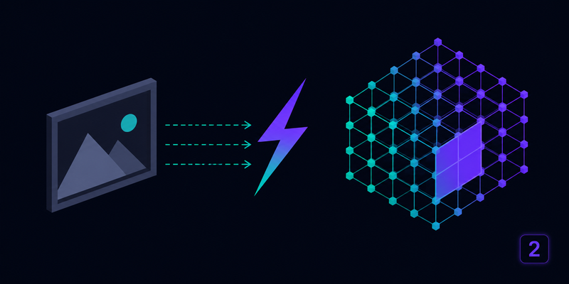
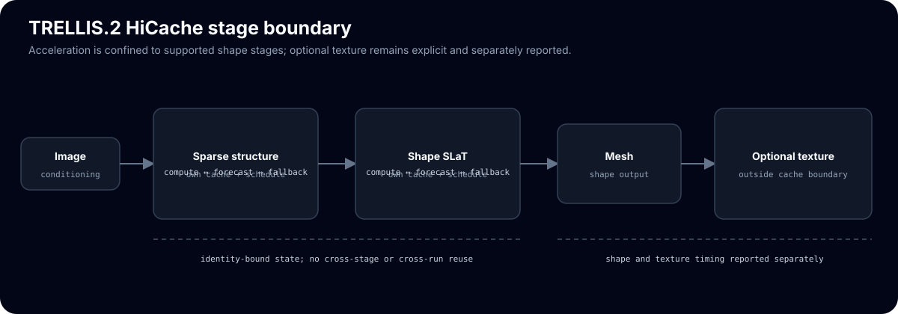

Forecast TRELLIS.2 flow velocity on skipped DiT steps
Training-free acceleration for TRELLIS.2 image-to-3D in ComfyUI. It forecasts the flow-matching velocity on skipped DiT steps instead of running the transformer, across the sparse-structure and shape-SLaT stages via the hicache-pp library.
cd ComfyUI/custom_nodes git clone https://github.com/Archerkattri/ComfyUI-TRELLIS2-HiCache pip install "hicache-pp>=1.2.1"
01
Evidence
| Historical speedup, TRELLIS.2-4B 512 pipeline, interval=2 | 1.9x on an earlier RTX 5090 run (README-reported, not reproduced by the CPU gate) |
|---|---|
| Chamfer distance vs stock mesh vertices | 0.0107 symmetric mean nearest-neighbour distance (near-lossless) |
| Sparse-structure / shape-SLaT skipped DiT calls | 9 / 9 of ~22 DiT calls each at interval=2 |
| CPU contract suite | 22 tests passing (dummy-DiT patch logic, no GPU) |
| TRELLIS.2 flow DiTs covered by stages selection | five (sparse_structure, shape_slat 512/1024, tex_slat 512/1024) |
| CI verification on release v0.1.4 | green CPU unit tests + static checks on Python 3.10-3.12 |
02
Media

03
Install & verify
python -m pytest tests/test_patch.py tests/test_budget_bridge.py -q
# expect 22 passed (CPU contract suite); tests/validate_gpu.py needs a GPU + TRELLIS.2-4B and is not run here
04
Limits
What this release does not claim (from the release notes):
- In-ComfyUI GPU validation (no GPU hardware).
05
Family
| Runs on | ComfyUI + ComfyUI-Trellis2 |
|---|---|
| Sibling nodes | ComfyUI-HiCache · ComfyUI-TRELLIS-HiCache |
| Standalone counterparts | hermit-trellis2-plus-plus |
| Forecast core | hicache-plus-plus (PyPI) |